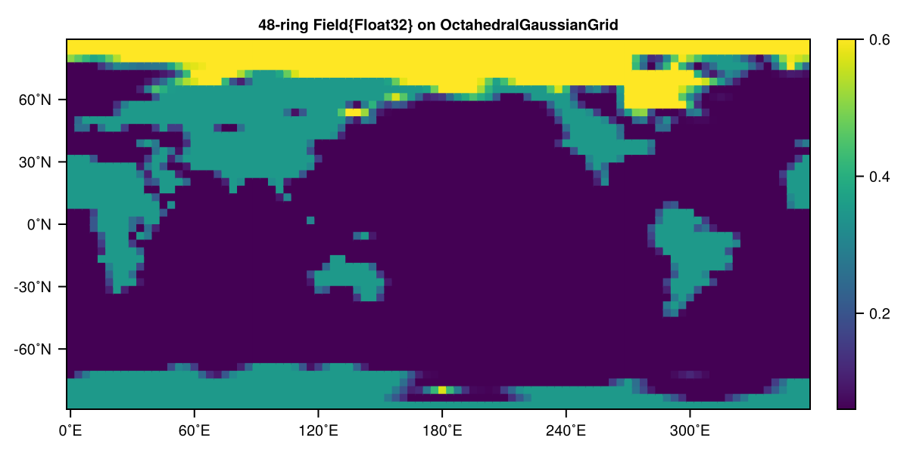
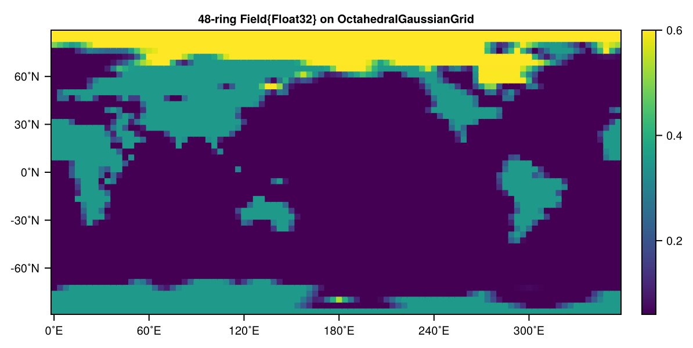

Parameterizations
The following is an overview of how our parameterizations from a software engineering perspective are internally defined and how a new parameterization can be accordingly implemented. For the mathematical formulation and the physics they represent see
We generally recommend reading Extending SpeedyWeather first, which explains the logic of how to extend many of the components in SpeedyWeather. The same logic applies here and we will not iterate on many of the details, but want to highlight which abstract supertype new parameterizations have to subtype respectively and which functions and signatures they have to extend.
The parameterizations described here can only be used for the primitive equation models PrimitiveDryModel and PrimitiveWetModel as the parameterizations are defined to act on a vertical column. For the 2D models BarotropicModel and ShallowWaterModel additional terms have to be defined as a custom forcing or drag, see Extending SpeedyWeather.
Define your own parameterizations
When defining a new paramerization it is required to subtype AbstractParameterization and extend the variables, initialize!, and parameterization! functions that define its behaviour. We'll first introduce the general idea here, before giving a concrete example.
When defining a new parameterization with (mutable) fields do make sure that it is constant during the model integration. While you can and are encouraged to use the initialize! function to precompute arrays (e.g. something that depends on latitude using model.geometry.latd) these should not be used as work arrays on every time step of the model integration. The reason is that the parameterization are executed in a parallel loop over all grid points and a mutating parameterization object would create a race condition with undefined behaviour.
Instead, you can define new prognostic and diagnostic variables for the parameterization to write into with the variables function:
function variables(::MyParameterization)
return (
DiagnosticVariable(name=:flux_variable, dims=Grid2D(), units="W/m^2", desc="custom flux variable"),
PrognosticVariable(name=:my_prognostic_variable, dims=Spectral2D(), units="K/s", desc="custom prognostic variable"),
)In this example we allocate a new diagnostic variable flux_variable and a new prognostic variable my_prognostic_variable for our parameterization. The flux variable is defined as a two-dimensional variable on our grid, and the prognostic variable is defined as a spectral variable. Three-dimensional variables are also possible by using Grid3D and Spectral3D as dims.
These variables are then passed to the parameterization! function inside of the regular PrognosticVariables and DiagnosticVariables objects. Additionally, DiagnosticVariables has several work arrays that you canreuse diagn.grid.a and .b, .c, .d. These work arrays have an unknown state so you should overwrite every entry and you also should not use them to retain information after that parameterization has been executed.
Define the parameterization! function
The actual parameterization computation is defined in the parameterization! function. This function takes in the prognostic and diagnostic variables as well as the model object and should compute the tendencies and fluxes that are then accumulated into the respective arrays. It is computed within a KernelAbstraction.jl kernel and therefore has to be defined with GPU support in mind. This means e.g. no dynamic dispatches, only scalar indexing and ideally no allocations. For more details see KernelAbstraction.jl and our example parameterzations that we implemented. The signature of the function is
parameterization!(ij, diagn::DiagnosticVariables, progn::PrognosticVariables, parameterization::MyParameterization, model_parameters)Note that
- albedos should extend
albedo!(ij, ...)instead, see Example: Albedo below model_parametersis a subset ofmodeladapted to GPU and passed on asNamedTupleinstead
Accumulate do not overwrite
Every parameterization either computes tendencies directly or indirectly via fluxes (upward or downward, see Fluxes to tendencies). Both of these are arrays in which every parameterization writes into, meaning they should be accumulated not overwritten. Otherwise any parameterization that executed beforehand is effectively disabled. Hence, do
diagn.tendendies.temp_tend[k] += something_you_calculatednot diagn.tendendies.temp_tend[k] = something_you_calculated which would overwrite any previous tendency.
Define the generator function
After defining a (custom) parameterization it is recommended to also define a generator function that takes in the SpectralGrid object (see How to run SpeedyWeather.jl) as first (positional) argument, all other arguments can then be passed on as keyword arguments with defaults defined. Creating the default convection parameterization for example would be
using SpeedyWeather
spectral_grid = SpectralGrid(trunc=31, nlayers=8)
convection = BettsMillerConvection(spectral_grid, time_scale=Hour(4))BettsMillerConvection{Float32} <: SpeedyWeather.AbstractConvection
├ time_scale::Second = 14400 seconds
└ relative_humidity::Float32 = 0.7Further keyword arguments can be added or omitted all together (using the default setup), only the spectral_grid is required.
Use your parameterization
In principle, there are two different ways to use a new parameterization within SpeedyWeather.jl:
- Define a new parameterization that replaces an existing one
- Define a completely new parameterization and pass it on to the model constructor additional to existing ones
Replace an existing parameterization
If you want to implement e.g. a new convection scheme, you probably want it to replace the already existing default convection scheme. Continuing the example from above, when defining a new scheme with the name matching those already present inside PrimitiveWetModel (see Keyword Arguments), we can simply pass it to the model constructor:
model = PrimitiveWetModel(spectral_grid; convection)otherwise we would need to write
my_convection = BettsMillerConvection(spectral_grid)
model = PrimitiveWetModel(spectral_grid, convection=my_convection)The following is an overview of what the parameterization fields inside the model are called. See also Tree structure, and therein PrimitiveDryModel and PrimitiveWetModel
model.vertical_diffusionmodel.convectionmodel.large_scale_condensation(PrimitiveWetModelonly)model.albedomodel.shortwave_radiationmodel.longwave_radiationmodel.boundary_layer_dragmodel.surface_conditionmodel.surface_momentum_fluxmodel.surface_heat_fluxmodel.surface_humidity_flux(PrimitiveWetModelonly)model.stochastic_physics
Note that the parameterizations are executed in the order of the list above. That way, for example, radiation can depend on calculations in large-scale condensation but not vice versa (only at the next time step). In principle, it is possible to change this order by providing a new parametrizations tuple of symbols as a keyword argument to the model constructor.
Customizing existing parameterizations
All of our existing parameterizations follow the same interface as defined before: A parameterization is expected to implement the following functions:
- Define a generator function
MyParameterization(spectral_grid; kwargs...) - A
initialize!(::MyParameterization, ::PrimitiveEquation)function - A
parameterization!(ij, diagn::DiagnosticVariables, progn::PrognosticVariables, ::MyParameterization, ::PrimitiveEquation)function - A
variables(::MyParameterization)function
Our existing parameterizations also define further abstract subtypes of AbstractParameterization that can also be used to used to reuse some of the functionality of existing parameterizations. These include:
using InteractiveUtils # hide
subtypes(SpeedyWeather.AbstractParameterization)If you extend on these parameterizations, you can inherit from them and only need to implement the functions that are not already implemented by the parent parameterization. It's best to check the source code of the parent parameterization to see what functions are already implemented.
Registering a new parameterization
If you want to implement a new parameterization that doesn't replace an existing one, you can register it by providing a custom parametrizations tuple of symbols as a keyword argument to the model constructor.
The default parameterizations of the PrimitiveWetModel currently are:
model = PrimitiveWetModel(spectral_grid)
model.parameterizations(:vertical_diffusion, :large_scale_condensation, :convection, :albedo, :shortwave_radiation, :longwave_radiation, :boundary_layer_drag, :surface_condition, :surface_momentum_flux, :surface_heat_flux, :surface_humidity_flux, :stochastic_physics)You can change the order in which the parametrizations are executed by reordering the tuple or you can add your own, additional parametrization to the model by adding it with custom_parameterization keyword argument. Below we will demonstrate this in an example.
Example: Albedo
Let's implement a very simple albedo parameterization as an example how to define a new parameterization. All this parametrization does is to set the albedo to a constant value over land and to linearly interpolate between the albedo of the ocean and the sea ice depending on the current sea ice concentration. This albedo is written into the diagnostic variable diagn.physics.albedo and used later by subsequent parameterizations.
Let's get started. First we define our albedo parameterization with all the functions we need to implement for our parameterization interface:
using SpeedyWeather, Adapt, CairoMakie
@kwdef struct SimpleAlbedo{NF <: Number} <: SpeedyWeather.AbstractAlbedo
land_albedo::NF = 0.35
seaice_albedo::NF = 0.6
ocean_albedo::NF = 0.06
end
Adapt.@adapt_structure SimpleAlbedo # this is needed to make it GPU compatible
# generator function
SimpleAlbedo(SG::SpectralGrid; kwargs...) = SimpleAlbedo{SG.NF}(; kwargs...)
# what has to be done to initialize SimpleAlbedo: nothing
SpeedyWeather.initialize!(::SimpleAlbedo, model::PrimitiveEquation) = nothing
# define variables required (composite albedo and ocean/land independently)
SpeedyWeather.variables(::SimpleAlbedo) = (
DiagnosticVariable(name=:albedo, dims=Grid2D(), desc="Albedo", units="1"),
DiagnosticVariable(name=:albedo, dims=Grid2D(), desc="Albedo", units="1", namespace=:ocean),
DiagnosticVariable(name=:albedo, dims=Grid2D(), desc="Albedo", units="1", namespace=:land),
)
Base.@propagate_inbounds function SpeedyWeather.albedo!(
ij, # horizontal grid index ij
diagn, # not ::DiagnosticVariables as called with `diagn.physics.ocean` then `diagn.physics.land`
progn::PrognosticVariables,
albedo::SimpleAlbedo,
model_parameters, # model unpacked into a NamedTuple
)
(; land_sea_mask) = model_parameters
(; sea_ice_concentration) = progn.ocean
(; land_albedo, seaice_albedo, ocean_albedo) = albedo
if land_sea_mask.mask[ij] > 0.95 # if mostly land
diagn.albedo[ij] = land_albedo
else # if ocean
diagn.albedo[ij] = ocean_albedo + sea_ice_concentration[ij] * (seaice_albedo - ocean_albedo)
end
endIn contrast to other parameterizations that are supposed to extend parameterization!(ij, diagn, progn, p::MyParameterization, model) albedos are expected to extend albedo! instead. That way they can be used of ocean, land or both. As long as they write into diagn.albedo[ij] as shown above, the shortwave radiation scheme will correctly use that to compute radiative surface fluxes over both ocean and land.
Note that for good CPU performance, we recommend to always define all parameterization functions with @propagate_inbounds to avoid bounds checking overhead and inline the function. Mostly this should enable vectorization across different grid points
Now, we can use our new parameterization in a model. We'll first demonstrate how to simply replace the existing albedo:
spectral_grid = SpectralGrid(trunc=31, nlayers=8)
albedo = SimpleAlbedo(spectral_grid)
model = PrimitiveWetModel(spectral_grid; albedo=albedo)
simulation = initialize!(model)
run!(simulation, period=Day(5)) # spin up the model a little
progn, diagn, model = SpeedyWeather.unpack(simulation)
heatmap(diagn.physics.albedo)
As you can see, it worked! The albedo is set to a constant value over land and to linearly interpolate between the albedo of the ocean and the sea ice depending on the current sea ice concentration.
Now, let's demonstrate how to add our new parameterization to the model by adding it to the parametrizations tuple. This way you can add parametrizations to the model that don't have to fit one of our pre-defined ones. Leaving parameterizations out also effectively disables them even though they are initialized and variables are created nevertheless
model = PrimitiveWetModel(spectral_grid;
custom_parameterization = SimpleAlbedo(spectral_grid),
parameterizations=(:convection, :large_scale_condensation, :custom_parameterization, :shortwave_radiation,
:surface_condition, :surface_momentum_flux, :surface_heat_flux, :surface_humidity_flux, :stochastic_physics))
simulation = initialize!(model)
run!(simulation, period=Day(5)) # spin up the model a little
progn, diagn, model = SpeedyWeather.unpack(simulation)
heatmap(diagn.physics.albedo)
Again, it worked! Note that it's important here to call the :shortwave_radiation after our :custom_parameterization as the shortwave radiation will use the albedo over ocean and land for respective flux computations and average the albedo then according to the land-sea mask.
In order to write more complex parameterization that access other variables and parameters of our models, it's best to familiarize yourself with our data structures that we explain in Tree structure, and therein PrimitiveDryModel and PrimitiveWetModel